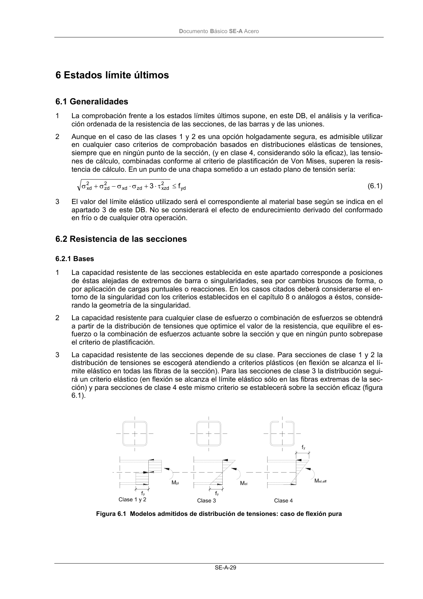

DB-SE-A Acero · edición 2007-10-23 · capa oficial
Documento DB-SE-A-oficial · SHA-256 del PDF 9ed9ea694aabfbda3bfbbef40dfe9223fde05d13c35bc2ba9751e5a96a22a64f
Página física 31 de 168.
Copia fiel del PDF fuente · Fuente oficial
Ficha de la disposición en la fuente oficial
Formato: Texto de la página (Markdown)
Documento Básico SE-A Acero SE-A-29 6 Estados límite últimos 6.1 Generalidades 1 La comprobación frente a los estados límites últimos supone, en este DB, el análisis y la verifica- ción ordenada de la resistencia de las secciones, de las barras y de las uniones. 2 Aunque en el caso de las clases 1 y 2 es una opción holgadamente segura, es admisible utilizar en cualquier caso criterios de comprobación basados en distribuciones elásticas de tensiones, siempre que en ningún punto de la sección, (y en clase 4, considerando sólo la eficaz), las tensio- nes de cálculo, combinadas conforme al criterio de plastificación de Von Mises, superen la resis- tencia de cálculo. En un punto de una chapa sometido a un estado plano de tensión sería: yd 2 xzd zd xd 2 zd 2 xd f 3 ≤ τ ⋅ + σ ⋅ σ − σ + σ (6.1) 3 El valor del límite elástico utilizado será el correspondiente al material base según se indica en el apartado 3 de este DB. No se considerará el efecto de endurecimiento derivado del conformado en frío o de cualquier otra operación. 6.2 Resistencia de las secciones 6.2.1 Bases 1 La capacidad resistente de las secciones establecida en este apartado corresponde a posiciones de éstas alejadas de extremos de barra o singularidades, sea por cambios bruscos de forma, o por aplicación de cargas puntuales o reacciones. En los casos citados deberá considerarse el en- torno de la singularidad con los criterios establecidos en el capítulo 8 o análogos a éstos, conside- rando la geometría de la singularidad. 2 La capacidad resistente para cualquier clase de esfuerzo o combinación de esfuerzos se obtendrá a partir de la distribución de tensiones que optimice el valor de la resistencia, que equilibre el es- fuerzo o la combinación de esfuerzos actuante sobre la sección y que en ningún punto sobrepase el criterio de plastificación. 3 La capacidad resistente de las secciones depende de su clase. Para secciones de clase 1 y 2 la distribución de tensiones se escogerá atendiendo a criterios plásticos (en flexión se alcanza el lí- mite elástico en todas las fibras de la sección). Para las secciones de clase 3 la distribución segui- rá un criterio elástico (en flexión se alcanza el límite elástico sólo en las fibras extremas de la sec- ción) y para secciones de clase 4 este mismo criterio se establecerá sobre la sección eficaz (figura 6.1). Figura 6.1 Modelos admitidos de distribución de tensiones: caso de flexión pura
